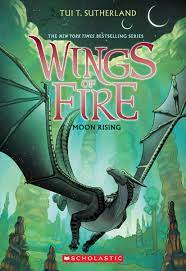
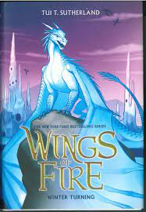
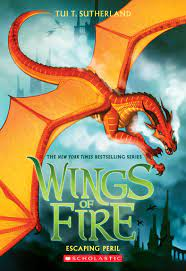
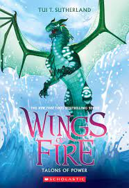

The war between the tribes is finally over, and now
the dragonets of the prophecy have a plan for lasting peace:
Jade Mountain Academy, a school that will gather dragonets
from all the tribes and teach them to live together, perhaps
even as friends
Moonwatcher isn't sure how she feels about school,
however. Hidden in the rainforest for most her life, the young
NightWing has an awful secret. She can read minds, and even
see the future. Living in a cave with dozens of other dragons
is noisy, exhauting - and dangerous.
In just a few days, Moon finds herself overwhelmed
by her secret powers, bombarded with strange thouoghts,
including those of a mysterious dragon who might be a
terrible enemy. And when someone starts attacking dragons
within the academy, Moon has a choice to make: Stay hidden and
safe? Or risk everything to save her new friends.

Book 7
Winter Turning
Daring mission ... or deadly mistake
Winter has been a disappointment to his royal family
for his whole life. When his sister, Icicle, runs away
from Jade Mountain Academy, fleeing terrible crimes and
possibly planning to commit more, Winter knows that they
both need a second chance to make things right - if
only he can find her.
Winter's new clawmates, Moon, Kinkajou, and Qibli,
won't let him make this dangerous journey alone. They
don't seem to understand that IceWings, the most
superior of all dragon tribes, can fix their own problems.
When their search leads the dragonets straight into
Queen Scarlet's vicious talons, Winter is grateful to
have some help. But even the bravest dragons can't follow
him to the Ice Kingdom, where he'll have to face the
greatest threat of all: his own family.

Book 8
Escaping Peril
A question of loyalty ...
Peril has always been loyal. First to Queen
Scarlet, even when she used Peril's firescales
to kill countless dragons in her violent SkyWing
arena. Now, Peril is loyal to Clay, the only
dragonet who has ever been her friend. So when
Scarlet threatens Jade Mountain Acdemy and everything
Clay cares about, Peril sets off to find her former
queen, stop her, and save the day, no matter what it takes.
But on the way, Peril is offered a chance at a
completely new life, free of her firesclaes and all
the pain they've brought her. All she has to do is
decide where her loyalty really belongs ... and
whether her own scales might actually be worth saving.

Book 9
Talons of Power
For every villan, there is a hero ...
Turtle isn't one of the heroes he reads about
in his stories. If he were, he'd use his animus powers
to help Pyrrhia - instead of keeping his abilities a
secret, even from his own sister. Now that Darkstalker,
the sinister and impossibly old dragon from Pyrrhia's
most notorious legends, has returned, Turtle
knows his own role is simple: hide. And stay hidden.
The other dragons at Jade Mountain Academy, on
the other hand, think Darkstalker is fascinating.
He charms everyone he meets, including Turle's
most skeptical friends. They all seem convinced
that the ancient dragon has changed.
Turtle isn't so sure. The more he watches
Darkstalker from the shadows, the more
Turtle knows that someone needs to stop the
powerful dragon. A real hero. But Turtle
is running out of time to find one, which means ...
he might have to try to save the day himself.

Book 10
Darkness of Dragons
Time is running out.
Qibli knows Darkstalker must be stopped. And he
knows he could stop him - if he had magic. With even
a sliver of the ancient dragon's all-powerfull scroll,
Qibli could rewrite history the right way: end war forever,
make every dragon happy, perhaps even cast a very small
spell so that everyone would like him ...
Instead, as Darkstalker's dangerous influence spreads
across Pyrrhia, entrancing or killing every dragon
in the seven tribes, Qibli can only grasp the small animus
objects he's borrowed from Turtle. With some clever
thinking, Qibli's talons finally hold the power to make
a difference.
But prophecies are not easy to rewrite. Can Qibli
be the magical force Pyrrhia needs, or will he be the one
to bring Jade Mountain - and his family, his friends,
his whole world - crashing down?